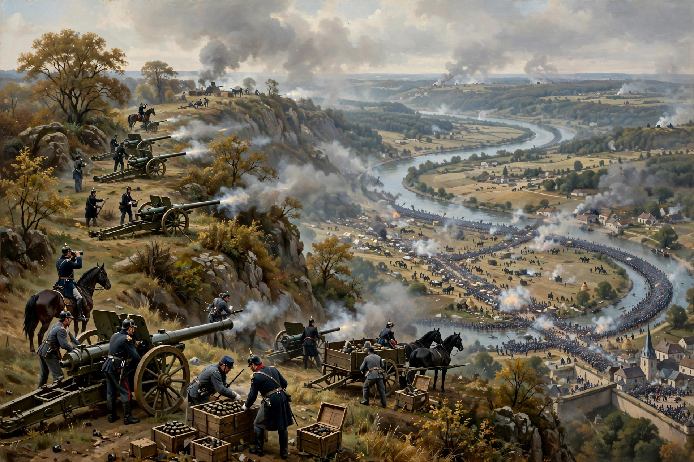

| Battle of Sedan | ||
|---|---|---|
| Part of the Franco-Prussian War | ||
| Date | 1 September 1870 | |
| Location | Sedan, Ardennes, France | |
| Result | Decisive Prussian/German victory Surrender of the Army of Châlons; Napoleon III captured; fall of the Second French Empire | |
| Belligerents | ||
| Prussia and the North German Confederation, Bavaria, Saxony, Württemberg | French Empire | |
| Commanders and leaders | ||
| Wilhelm I, Helmuth von Moltke, Crown Prince Friedrich, Crown Prince Albert of Saxony | Napoleon III (POW), Patrice de MacMahon (wounded), Emmanuel de Wimpffen | |
| Strength | c. 200,000, 770 guns | c. 120,000, 560 guns |
| Casualties and losses | c. 2,300 killed, 6,800 wounded | c. 17,000 killed and wounded; 21,000 captured in battle, 83,000 surrendered |

The Battle of Sedan was fought during the Franco-Prussian War on 1 September 1870. The French Army of Châlons, marching to relieve Metz, was intercepted, encircled and destroyed by the Prussian-led German armies at the fortress town of Sedan. Emperor Napoleon III, present with the army, surrendered with some 100,000 men — an unprecedented humiliation that toppled the Second Empire within days and set Germany on the path to unification under Prussia.
After the defeats of August 1870, Marshal MacMahon's Army of Châlons — with Napoleon III in attendance — was ordered by Paris on a desperate flank march to relieve Bazaine's army besieged in Metz. Moltke's Third Army and the new Army of the Meuse swung north and caught the French at Beaumont on 30 August, driving them into the cramped loop of the Meuse at Sedan, with the Belgian frontier closing their rear.
On 1 September the Germans closed the ring and massed over 500 guns on the heights. MacMahon was wounded early; command devolved chaotically between Ducrot (who ordered retreat) and Wimpffen (who, armed with a ministerial commission, ordered attacks). Desperate French cavalry charges at Floing — watched by Wilhelm I, who is said to have exclaimed "Ah! les braves gens!" — were shot down by German infantry and artillery. By afternoon the encircled army, pounded in the narrow pocket, was dissolving; Napoleon, ill and seeking, witnesses said, a death that did not come, ordered the white flag raised.
Napoleon's famous note to Wilhelm — "having failed to die among my troops, I place my sword in Your Majesty's hands" — preceded the capitulation signed on 2 September: 83,000 men marched into captivity, in addition to those captured in the battle. The Emperor became a prisoner at Wilhelmshöhe.
On 4 September Paris proclaimed the Third Republic and a Government of National Defence; the war continued with the siege of Paris, but the Empire was finished. Sedan Day (Sedantag) was celebrated in Imperial Germany as an unofficial national holiday, and the German Empire was proclaimed at Versailles in January 1871.
Howard, Michael, The Franco-Prussian War (1961); Wawro, Geoffrey, The Franco-Prussian War (2003).